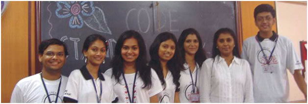

Club of Debates and Elocution
The last few decades have seen the world progress by leaps and bounds. Today's world is defined by a global economy, information technology, scientific understanding and logical reasoning. Still, there would be no semblance of order if there was no communication. Hence, the Club of Debates and Elocution (C.O.D.E.) endeavors to empower each member with the ability to write intelligently, make fiery speeches with impassioned arguments.
The first task for C.O.D.E. during the academic year 2009-10 was aiding the F.Y.J.C. admission process. C.O.D.E. members worked behind the scenes, entering data from the forms received into computers.
Next came C.O.D.E.'s flagship event-'Stand Up, Speak Up!' which is an impromptu speaking competition for the F.Y.J.C.s. On the maiden day of F.Y.J.C. lectures itself, the C.O.D.E. core committee conducted the elimination round in all eight divisions covering almost 90 contestants. After much deliberation, the committee released a list of 25 semi-finalists, who had been a cut above the rest.
During the semi-final, each student was individually briefed on the way he/she could improve. Ultimately, 9 students made it to the final round of Stand Up, Speak Up! In the final round, every speech was an indigenous mix of philosophy, humour and detail. Many teachers and students graced the occasion with their presence. Krusha Sehjwani, Natasha Bana and Meherzeen Avasia were presented the 1st, 2nd & 3rd place awards respectively.
H.R.'s very own inter-club fiesta, Talent Parade, saw C.O.D.E. play a dual role. Half the comperes of the show were C.O.D.E. members while the other members set the stage ablaze by putting up a scintillating dance performance dedicated to Michael Jackson. The theme of the dance ranged from current problems like terrorism to problems like racial discrimination. A sharp contrast of props, namely black hats and white gloves blended together to form a visual delight while the audience tapped their feet to the evergreen tune 'Black or White.'
The first inter-collegiate event of the year for C.O.D.E. was an English Elocution Competition held by the 'Gandhi Smarak Nidhi' at the historic Mani Bhavan. H.R. was represented by Nihal Daswani, Chantelle Duarte Monteiro and Meherzeen Avasia. Over 30 participants spoke on various topics related to Gandhiji's role in the freedom struggle. Nihal Daswani was awarded the 1st Prize.
C.O.D.E., on behalf of H.R., participated in an essay writing competition organized by the Swiss Embassy. The aim of the competition was to promote Indo- Swiss ties with the theme being 'Tourism in Switzerland'. C.O.D.E. held a tryout in college, short listed the best essays, and forwarded four English and five Hindi entries. An S.Y.J.C. student, Richa Mohnani won the 3rd prize.
St. Andrews College, Bandra, held an inter-college elocution competition for Junior College students. Nihal Daswani represented H.R. and spoke on the topic 'Men Smart Women Smarter' for which he was awarded the 'Best Speaker' prize.
The Annual Prize Distribution for the Junior College was held in December and was hosted by Nihal Daswani, Lekha Bapna, Chintan Shah and Natasha Bana,all members of C.O.D.E.
At the Annual Sports Day, the F.Y.J.C. C.O.D.E. members took charge of the refreshment stand, ensuring that all the dignitaries and participants were kept hydrated throughout the meet.
In this manner, C.O.D.E. has succeeded in producing a generation of confident youth, well-read, well-spoken and wellopined; a generation that is bold enough to know that 'Speech is Silver' and yet humble enough to learn that sometimes 'Silence is Golden.'